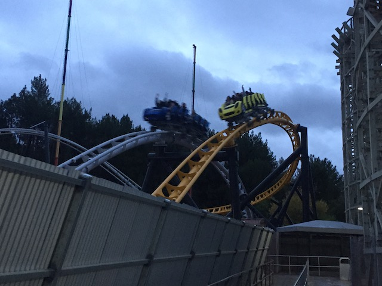
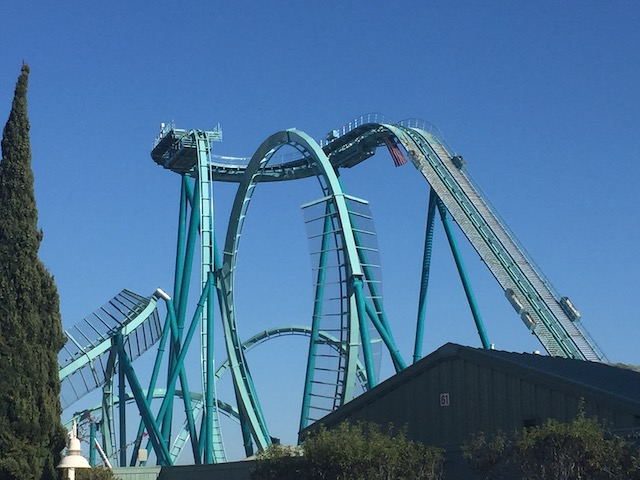
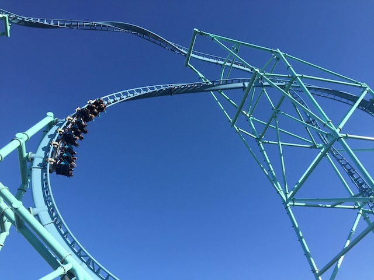
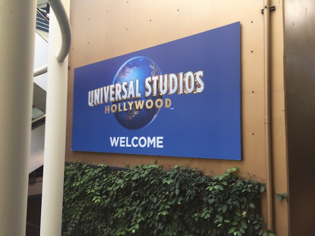
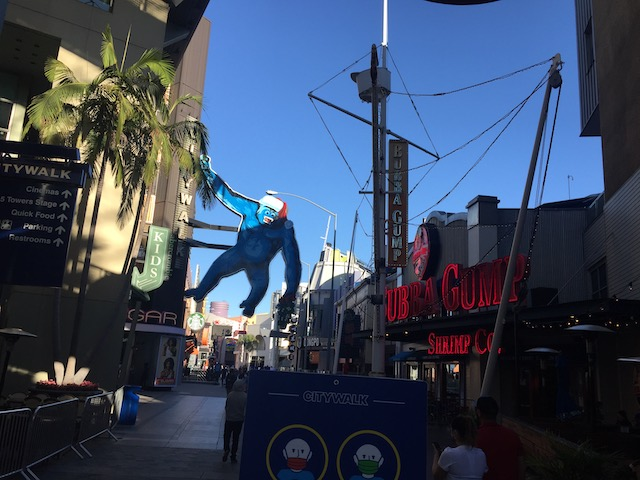

| |
The 2020 Update
All right. So....you've probably noticed a lack of updates this year on Incrediblecoasters. Well, that's because the world is ending and 2020 is the worst year ever (2016, I owe you an apology). And yeah, thanks to the COVID-19 Pandemic, EVERYTHING shut down, including all the theme parks. And all my trips got cancelled as a result. F*CK!!! And while otehr theme parks slowly started to open back up, NOT California! GAH!!! Seriously, with the exception of our surprise weekend trip to Lagoon that was taken since....I was going f*cking crazy! That aside, my entire coaster season post-February got cancelled. So....I figured I'd put together a rag-tag update that showed the little bit of roller coaster fun we had before the world shut down, as well as what little bits of fun California allowed post-lockdown. So let's start out by actually going back to Knotts on New Years Eve.
If you're wondering why we're here New Years Eve? Well....to get our final rides on Voyage to the Iron Reef. Also, it's a place to see fireworks.
Checking out the line for Voyage to the Iron Reef.
Well....this here be the last time I sail these seas. Can't by Voyages to the Iron Reef were stopped by those damn bears and their pic-a-nic baskets. Note to self. Bring bear spray next voyage.
Well....at least on the upside, my very last Voyage to the Iron Reef gave me a semi-decent score (by my standards at least).
I know I've already said my goodbyes to Voyage to the Iron Reef on this site previously (I didn't expect me to cover this day on the site), and that it's been gone for over a year now. But you really were a fun and underrated dark ride. Still looking foreward to Beary Tales as soon as this f*cking pandemic is over!
 Come on. Decorating cookies is nice and all. But...Christmas is over. It's New Years Eve now.
Come on. Decorating cookies is nice and all. But...Christmas is over. It's New Years Eve now.
All right. One thing they have is Ballroom Dancing. Since...that's apparently something different to do on New Years. Note to self: I can't dance for sh*t.
Snow! In California! And people still say that climate change isn't real!? =P
*gasp* It's 2020 now!? YOU FOOLS!!! RUN!!! RUN FOR YOUR LIVES!!!
These celebrations are gonna seem so foolish and idiotic if not in 2 days, then at least by March when the world really goes to hell.
All right. Time for the first (and one of very few) park visits of 2020.
Hello Timber Mountain Log Ride Boats down for repairs.
 First Coaster of 2020 (And I miss Xcelerator. It's been too long. Stupid pandemic).
First Coaster of 2020 (And I miss Xcelerator. It's been too long. Stupid pandemic).
Random lunch from Knotts that's nothing special, but still good.
"Excuse me, but I wanna see the manager! I have a lot that I wanna bitch and moan about! No! My name is not Karen!"
 You know, this ride has been getting better with age.
You know, this ride has been getting better with age.
 OK. Maybe that's just the coaster withdrawls kicking in, and making me so desperate to ride anything, that Silver Bullet would feel like Pyrenees.
OK. Maybe that's just the coaster withdrawls kicking in, and making me so desperate to ride anything, that Silver Bullet would feel like Pyrenees.
Hmm. I was just stopping by to pick up Jason (and sneak in a quick ride or two). But...it appears that there's something going on at Knotts today.
Yep. Today is Charlie Brown Day. YAY!!!
 I like the Peanuts and all, but do we really need a holiday to commence them? And isn't Charlie Brown against the idea of more commercialized holidays? Have you even seen A Charlie Brown Christmas!?
I like the Peanuts and all, but do we really need a holiday to commence them? And isn't Charlie Brown against the idea of more commercialized holidays? Have you even seen A Charlie Brown Christmas!?
Well, it's still nice to see all the Peanuts stuff.

So we only visited Six Flags Magic Mountian once this year. It was just a quick visit for a couple hours to get some more West Coast Racers rides and on a few other coasters. X2 & Twisted Collosus were both down for the day (I never got on them in 2020! WAH!!! ='( ). And there were no photos taken today (This photo was a leftover photo from West Coast Racer's Preview). So I assumed that this day wouldn't have been mentioned at all on Incrediblecoasters. However, it was our only visit to Six Flags Magic Mountain, and I figured it should get at least some sort of mention. Just to prove that we did hit SFMM in 2020.
All right. Time for our one visit to Sea World San Diego of 2020.
Seriously. If you care about Animal Rights, DON'T support PETA. Support SeaWorld, or something along the lines of Awesome Ocean. I'm sure there's some good animal groups that aren't full of PETA, Blackfish, Firebomb Animal Testing Sites, Pop Animal Actvist (I think I'm the first person to use that term) crowd that I'm ignoring. Just don't fall into the PETA/Blackfish crowd. Please.
So I wound up renewing my Season Pass in February, since....I figured I'd be at Sea World a lot this year (plus, I want to support them). Little did I know that the world was about to end next month and I'd only use my freshly bought season pass once. Thanks COVID.
Between letting Doctor Fish clean your feet in the wild and letting them clean me here, you'll NEVER see me at a Fish Spa.
 It may be a small little coaster, and it may be the weakest of the Mack Launched Coasters, but this bad little boy still packs a punch! =)
It may be a small little coaster, and it may be the weakest of the Mack Launched Coasters, but this bad little boy still packs a punch! =)
Still hoping we'll be able to reunite with our Incrediblecoasters Manta Ray fan again one of these days.
ARE YOU F*CKING KIDDING ME!!?
I can't believe it's now 2021, and I still haven't ridden Sea World's new 2019 ride! Yeah, I know the pandemic stopped me, but still! I know people say it's not very good and that I'm not missing much! But I really wanna get on this thing before it winds up going the way of Windjammer or Windseeker! Plus, I didn't hate Harley Quinn NEARLY as much as people expected me to. So I'm still withholding judgement on this ride! Really hope to get on this thing in 2021!
 Tell me Sir Flamingo. Is there anything over there worth checking out?
Tell me Sir Flamingo. Is there anything over there worth checking out?
 It's a fun ride and all, but for a Sea World park, it's not that well themed.
It's a fun ride and all, but for a Sea World park, it's not that well themed.
 Aww. I remember taking these photos and thinking to myself "Look foreward to riding that in the Spring". If you told me back then "You're gonna wind up not riding Emperor in 2020", I would've thought you were either crazy, or saying I was gonna die in a car accident (I think I just made myself grateful that that didn't happen in 2020).
Aww. I remember taking these photos and thinking to myself "Look foreward to riding that in the Spring". If you told me back then "You're gonna wind up not riding Emperor in 2020", I would've thought you were either crazy, or saying I was gonna die in a car accident (I think I just made myself grateful that that didn't happen in 2020).

Ugh. Stupid Pandemic! Stopping me from riding Emporer, as well as two other coasters that were supposed to open this year (Well, to be fair, one of them did open in 2020, but the trip was still cancelled). Well, at least I'll be riding all three of those coasters in 2021.

It may be the modern equivelant of a Boomerang in just how cloned these rides are becoming, but Electirc Eel's still a very fun ride that I always enjoy riding nonetheless.
CRAB PEOPLE! CRAB PEOPLE! Tastes like crab people. Talk like people.
What are you staring at punk?
Still the smartest animal in the universe.
For those of you too scared to Scuba Dive in these waters, but still wanna see all the sea creatures, well....we got them here for you.
Hey Disney! Get over here! I found Dory!
That's right! I'm swimming in your coastal waters! Fear me bitch!
All right. Time for us to hit up Shipwreck Rapids. Still one of the better rapids rides.
GAH!!! For all the fun we had soaking people (I still enjoy those videos of us soaking people on Log Jammer. Fun times, and Pink Sweater Girl is still hilarious), today was payback as now the shoe was on the other foot and we were being soaked. GAH!!! Karma finally came back for me. Note to self. Bring quarters and recreate those Log Jammer moments again on Shipwreck Rapids.
 I still can't believe that this was my last coaster that I rode in California! My home state! And this was back in F*CKING FEBRUARY!!! If I didn't do that spontaneous Lagoon trip, this would've been my last coaster ridden at all. That is sad.
I still can't believe that this was my last coaster that I rode in California! My home state! And this was back in F*CKING FEBRUARY!!! If I didn't do that spontaneous Lagoon trip, this would've been my last coaster ridden at all. That is sad.
 All right. So fast foreward to July. The world has ended, we're now in a global pandemic, everything is terrible, and all the theme parks are closed. They've managed to open up elsewhere, but not in California. However, they do allow Food Festivals. So....Knotts basically said....We're not a theme park! We're a food festival! So....we're off to Knotts as a Food Festival today.
All right. So fast foreward to July. The world has ended, we're now in a global pandemic, everything is terrible, and all the theme parks are closed. They've managed to open up elsewhere, but not in California. However, they do allow Food Festivals. So....Knotts basically said....We're not a theme park! We're a food festival! So....we're off to Knotts as a Food Festival today.
Of course, they take your temperature before going in since....you know. Global Pandemic.
So, we're here for the Taste of Calico. A food festival that surprisngly, had a lot of great food. I guess this makes up for the lack of a Boysenberry Festival this year (Damn you COVID-19).
 Sorry. The roller coaster is too dangerous to ride today.
Sorry. The roller coaster is too dangerous to ride today.
Actually, no. If everyone on the ride wears a mask, you enforce social distancing by roping off seats (It'll kill capacity, but I'LL TAKE IT!!!), and sanitizing everything (again, murder on capacity, but better than nothing), this can be run safely and without spreading COVID-19. It's been proven to work on other coasters in other states and countries.
That may be true, but then this wouldn't be a food festival. It'd be a theme park. So we have to keep the rides closed even though we know it's perfectly safe to run them because theme parks are arbitrarily deemed more dangerous than they are.
GAH!!! SON OF A BITCH!!! >=(
 All right. First up, we have the Mac and Cheese Bites. Now, I'm a huge fan of Mac & Cheese. It's in my Top 10 Foods. So naturally, I liked it. But on the Mac & Cheese Scale, this is on the lower end. The Habanero Mac & Cheese from last years Boysenberry Festival was much better.
All right. First up, we have the Mac and Cheese Bites. Now, I'm a huge fan of Mac & Cheese. It's in my Top 10 Foods. So naturally, I liked it. But on the Mac & Cheese Scale, this is on the lower end. The Habanero Mac & Cheese from last years Boysenberry Festival was much better.
Cheers to the first fun thing we've done (and the first thing that isn't remote work, watching Netflix, playing OpenRCT2 (finally found the time to play again in quarantine), and mourning the horrendous nightmare state of the world) in f*cking forever.
Oh yeah, and Boysenberry Beer is really good. It's a yearround thing, but I get it so rarely thanks to it being really expensive, and when it's avaliable on the tasting card, take advantage of it! =)
Item #3. We now have wings. Nothing special here. Just standard wings. But still very good.
Sorry folks. All the rides are closed. But hopefully we can entertain you on this stage. I think we can do that without being classified as a theme park.
The Boysenberry Festival may have been cancelled this year, but with some items here, we can make our own Boysenberry Festival! We'll make Boysenberry Wings, Boysenberry Soda, Chips and Boysenberry Salsa, and of course, top it all off with some Boysenberry COVID (JK) >=).
*gasp* Are people lining up for the GREATEST RIDE EVER!!? Nope. Still closed cause of COVID. They're just lining up for food.
Social Distancing! Not only does it slow the spread of a deadly pandemic, but it also means I get more space and don't have to be around other people! Double win!
Item #4. The Pastrami Sandwich. No, that's not Pulled Pork. It's Pastrami. Don't worry. I got confused too. It not only looks like pulled pork, but kind of tastes like it too. Meh, I was not a fan of this item. Not terrible, but....the mustard was the best part. Not a good endorsement.
So....Knotts wound up turning the Mystery Lodge into a relax room, where there's AC, you can relax, and....take off your mask? Am I the only one who sees this as a really bad idea? Seriously, if anything at the event is gonna spread COVID, it's this! Seriously! Wear your mask! "Mask-Free areas" should be places where you're alone (God, I hope they're social distancing in there! Cause the virus isn't gonna care that it's a relax room)!
Moving onto more drinks, we have the Basil Lemonade. This was a disappointment. Basil is great in a lot of foods. Particularly Pesto. However…..it does NOT go well with Lemonade. It has an almost sort of earthy Tea-like taste to it. But I guess that’s my fault for not thinking this through. Why did I think this would be good after further thoughts about the concept? I honestly feel stupid for ordering it.
 "Hey you! I see you! Wear your f*cking mask asshole lest you wind up in prison with Sad-Eye Joe!"
"Hey you! I see you! Wear your f*cking mask asshole lest you wind up in prison with Sad-Eye Joe!"
Moving on, we have the Steak Flank Chilli. I actually just had half of Jason's. Which is a shame. Because this stuff was GREAT!!! It was super good meat, covered in super good sauce, and it was just all around super good chilli! I actually prefered this to the Boysenberry Chilli from the Boysenberry Festival! Favorite thing at Taste of Calico!
And finally, we conclude Taste of Calico with the Boysenberry Cookiewich. This is their version of an ice cream sandwich. And…..it tastes good. However, making it where you just take two regular cookies, and sandwich them between ice cream, the cookies become rock hard and it becomes difficult to eat. The cookies become jawbreakers, and all the ice cream leaks out. It tastes good, but it's a pain in the ass to eat.
What's wrong with that Knotts Berry Farm Bus?
All right. Time for another food festival. Because the Taste of Calico was such a big success (pretty sure Knotts is one of the only theme parks in California making any sort of money in 2020), they're doing another one now. Taste of Knotts.
First up, we have the Hatch Mac and Cheese. Yeah, I got Mac & Cheese again. Because you know, I freaking love it. And while it wasn't the best Mac & Cheese ever, it was still really damn good. Not as good as the Habanero Mac & Cheese, but better than the Mac & Cheese Bites from Taste of Calico.
 Next up, we have Mango Cider. This was pretty good. I’m a big cider fan, and this was pretty much just boozy mango juice. Very good, but not something I’d be willing to shell out a lot of money for at a normal park event.
Next up, we have Mango Cider. This was pretty good. I’m a big cider fan, and this was pretty much just boozy mango juice. Very good, but not something I’d be willing to shell out a lot of money for at a normal park event.
OK. I have to stop and rant about California's lockdown system (WARNING: POLITICS WILL BE DISCUSSED HERE).
So yeah. Everything shut down in March because....you know. Pandemic. However, around June, most theme parks began opening back up with COVID restrictions. And this isn't just all the Red States with crazy horrible governors (TX, FL, GA, SD, etc.) throwing up their arms and saying "COVID SCHMOVID!!! OPEN BACK UP CAUSE MUH FREEDOM!!! LET THEM DIE!!! IT HELPS BUILD HERD IMMUNITY!!! DUR!!!". Oh, don't get me wrong. They totally did open up and say EXACTLY that! One officiall LITERALLY said "We should sacrafice Grandma to COVID to save the economy". F*CK YOU DUDE!!! I hope every senior remembers that next time you're up for re-election! But it's not just them! Theme parks were opening back up in many E.U Countries and Japan. Places where I actually trust the judgement of their governments (at least in this regard).
Seriously, the few places where the theme parks were never able to open from what I could tell were here, Illinois, pretty much all of the Northeast, and Canada. That seems to be it.
I already ranted about how theme parks can operate safely, and that it's stupid. However, I didn't go over the most infuriating part. The hypocrisy.
You can not argue that it is safe to open up an outdoor food festival, a zoo, an aquarium, or anything along those lines, and then turn around and say that theme parks are extra dangerous. Especially when there's data that PROVES IT!!! I know Gavin Newsom claims he sent a crew to Disney World to investigate their safety practices. BULLSH*T!!! YOU JUST SENT THEM THERE TO GO ON VACATION!!!
And....yeah. There was actually a joint effort where Disney, Universal, Blackstone (Busch & SeaWorld), Cedar Fair, and Six Flags, all got together and teamed up, to basically tell Gavin Newsom, "This is bullsh*t! Your guidelines are hypocritical" and we're even considering a lawsuit because of this (BTW, I TOTALLY 100% agree that Theme Parks should be in Tier 3, along with zoos, aquariums, all that stuff). Literally every argument they used against theme parks applies to zoos, aquariums, outdoor food festivals.
"Because people travel around a theme park and do not remain in one socially safe place, like say a seat at a sporting event, the likelihood of catching Covid-19 is much higher"
They travel around a theme park just as much as they do around a zoo, aquarium, or an outdoor food festival. Like the one I'm at now! My walking patterns here are damn near identical to how they'd be at a normal day at Knotts! And BTW, your masks easily stay on all day at a theme park! They don't come off on roller coasters! I can speak from experience visiting Lagoon this year (though to be fair, I'm not sure if they meant masks coming off on coasters when they mentioned that). The only time they come off is eating, and....yeah. Social distance. Tables further away. Outdoor dining only.
I think the only reason they dropped this was because....COVID is OUT OF CONTROL right now, causing a 9/11 every day, and the ICUs are overflowing, so now....theme parks actually should be closed, as should zoos, aquariums, food festivals, any sort of dining, etc. Stay at home orders and mandatory quaratine needs to be a thing now (I hate you so much Anti-Maskers. I really really do). And....it is. So good job on that Gavin Newsom. But....this disperity between theme parks, and zoos and aquariums needs to stop! Let alone your own infuriating hypocrisy! GAH!!! >=(
Item #3. Beer Cheese and Crinkle Chips. I’m not going to lie. This was my favorite thing from Taste of Knotts that I got. I love cheese. And beer cheese, Mmm! It’s like pub cheese! Only this also has a a little bit of a beer taste to it (It won’t get you drunk, but it adds flavor). The chips were good. But that beer cheese! Mmm! So good!
 Come Kevin! Come inside! You know you want to see the Mystery Lodge building again! Come! Before it's too late!
Come Kevin! Come inside! You know you want to see the Mystery Lodge building again! Come! Before it's too late!
*gasp* Food items avaliable in places besides Ghost Town!? Say it ain't so!
Back to food, we have Item #4. French Toast Churro Sticks. Little tiny churros with whipped cream and caramel sauce. Do you like churros? Then you’ll probably like this (Good news for me, cause I do). If not, get something else.
Item #5, we have Watermelon Lemonade. Watermelon Lemonade. So much better than the Basil Lemonade. Not the best thing ever. Tastes kind of like the standard fast food flavored lemonade, if they decided to go with watermelon instead of strawberry. Not my favorite thing, but still good.
And finally, we end with the Boysenberry Pie Bites. These are good. Really good. Tiny little bites of boysenberry pie. Only downside of these is that these things are filling as fuck! I normally don’t complain about foods being rich, and while this isn’t a complaint, this thing was F*CKING RICH!!! Had to take one home.
So, like all resteraunts in California, they're only allowed to open up with outdoor dining and with social distancing. So....here's some makeshift outdoor dining to keep Mrs. Knotts open. I however, never ate there this year. Simply because....I kept going to Knotts for food festivals, and I wasn't hungry! And I never thought to just go to the resteraunt itself on a random summer day.
All right. Fast foreward to November. Thanksgiving is now over, and I haven't done anything fun since Lagoon! F*CK!!! >=( So....I've got myself a rag-tag day of L.A fun since....I gotta do something! So...we're here at Pinks.
Second time here (I just never mentioned it the first time, since....hot dog resteraunt visits aren't something I really cover on this site). Pinks was always good at parks and fairs, the real thing is definately better. Still go back and forth between this and Nathan's Hot Dogs. So many good hot dogs to choose from here.

*gasp* We're actually heading to Universal Studios today! Well....City Walk since....the theme park is closed. But still fun!
 Yes, please don't come if you're sick. You don't wanna shut down all the other fun things. >=(
Yes, please don't come if you're sick. You don't wanna shut down all the other fun things. >=(
 GAH!!! This BETTER be temporary! There's A LOT of COVID measures that I REALLY hope go away once the pandemic is over (and I'm not even talking about masks)! And this is definately one of them! Seriously! We need water fountains!
GAH!!! This BETTER be temporary! There's A LOT of COVID measures that I REALLY hope go away once the pandemic is over (and I'm not even talking about masks)! And this is definately one of them! Seriously! We need water fountains!
"I grab them by the ballot-box. I don't even wait."

Well, it's been a while since I last walked around Citywalk. But hey. Let's have fun walking around here.
Come on dude! I know parking in L.A is a big pain in the ass (luckily, parking is now free since it's all just for Citywalk). But that is not an acceptable place to park. =P
So Jason decided to splurge and get Water Massages for us. Uh....this should be interesting.
So....yeah. A water massage doesn't actually get you wet. It just massages you by spraying water on a plastic wrap that covers you. So you feel the pressure of the water on you, while staying dry. Fine for the most part, however, I REALLY don't like it doing the bottom of my feet. I'm extremely ticklish (And I hate it. If you tickle me, I'll probably donkey-kick you or hurt you in some other way out of sheer reflex and self defense. So don't!), the water tickles me there, and....I was squirming trying to ensure that the water never hit the soles of my feet.
Sorry kids, but if you play in the fountains, you'll contract a deadly plague, and spread it to others if you don't die (And I'm not being sarcastic here. I know it sounds like an absurd joke, and in normal times, it would be. But...global pandemic)!
FUCK ANTI-MASKERS!!! NO SERIOUSLY!!! FUCK ANTI-MASKERS!!! I know I generally complain a lot about stupid people. They're kind of a pet peeve of mine. And I've spouted a lot of misanthropy. I thought humanity hit rock bottom. But....Anti-Maskers....this is a whole new low (and yet, that new low has amazingly been surpassed yet again thanks to the horrifying actions that have taken place right as I'm making this update). But....there's a global pandemic, it's basically a 9/11 every single day (let alone the rest of the damage), hospitals are overflowing, people are being sentenced to die for curable things because the doctors are too busy dealing with COVID patients! And you selfish assholes think you can increase the death count, and throw those lives away! You don't wanna wear a mask cause it's uncomfortable!? Cause "I DONT WANNA BE UPRESSED!!! DUR!!!"? Cause you should die for "MUH FREEDOM TO SPREAD THE PLAGUE"!? FUCK YOUR COMFORT!!! YOU'RE NOT OPRESSED, ASSHOLE!!! AND FUCK YOU (I don't use censors for the strongest of anger)!!!
Once again, WEAR A F*CKING MASK!!!
 No! I don't have a sugar problem! I'm just going to browse! I'm not even gonna buy anything!
No! I don't have a sugar problem! I'm just going to browse! I'm not even gonna buy anything!
How much for the Jelly Belly Wizard of Oz recreation?
Countdown to January 20 please (Seriously, getting rid of F*ckface was the ONE good thing to come out of this abomination known as 2020)!
Yep, you can buy a Flaming Moe here. However....too expensive for what's essentially just an energy drink. If you wanna recreate the drink, make the actual drink!
 Much like the Flaming Moe, you can also buy the Harry Potter food here. Except....I had to get another Butterbeer. Not only since Jason never had one, but....they're really good. And I've only had it twice before. So....it was a nice treat (though really expensive). Plus, I got to try it hot this time. And....I prefer it that way.
Much like the Flaming Moe, you can also buy the Harry Potter food here. Except....I had to get another Butterbeer. Not only since Jason never had one, but....they're really good. And I've only had it twice before. So....it was a nice treat (though really expensive). Plus, I got to try it hot this time. And....I prefer it that way.
I know I said I wasn't coming back to Universal Studios Hollywood until Nintendo World opens up (from seeing reports of it in Japan, it looks awesome)! But my theme park cravings are so strong that F*CK IT!!!
Come on Gavin Newsom! OK, it makes sense now since it's spiking out of control and is basically a 9/11 every single day. But once again, theme parks aren't any more dangerous than zoos, aquariums, or food festivals in spreading COVID. Stop treating them worse than those other industries! >=(
And of course, it's not a visit to City Walk without stopping at Voodoo Doughnuts.
Mmm. So many different options to choose from. I'm gonna have to start coming here a lot more often. =P
We may not have been hungry at the time, but...just take them home and eat them there!
First up, we have the Old Dirty Bastard. A doughnut with chocolate frosting, crumbled Oreos, and peanut butter. And....yeah. This thing is naturally really good. Anyone who likes chocolate and peanut butter, is gonna like this.
Also, we have the Portland Creme. It's kind of like the famous Boston Creme doughnut. Except with Bavarian Cream instead of just custard. And frosting eyes, because...Portland (Never visited the city. Barely been to Oregon at all). Very good.
And that's our rag-tag 2020 Update. Yeah. It's clear that this was the worst year ever. That sentiment is so universal that corporations are cashing in on it being the worst year ever. But it's true. Luckily, it seems like 2021 should be...better. OK, it's still not gonna be great. But...at least we have a vaccine now. Yeah, the distribution is a nightmare, which is only being compounded by horrendous incompetant government. But that'll also be fixed this year (I'm not even a fan of the replacement, but....JUST GET F*CKFACE THE F*CK OUT!!!). So, that should mean that more fun stuff will be happening. I know that East Coast Trip is 99% happening, unless the virus mutates to the point where the vaccine is moot. So we all have fun plans that are still ready to go (California REALLY needs to open its stuff back up! As soon as its not 9/11 everyday!). Yeah, 2021 isn't gonna magically be the best year ever (in fact, the first week of it has been horrendous), but at least there's a light at the end of the tunnel for most of the issues.
Home
|